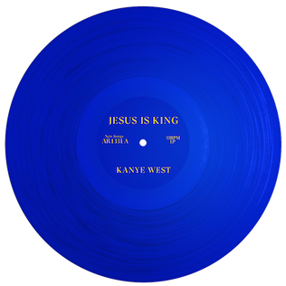
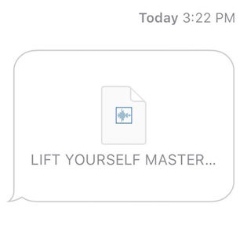

Kanye West - Worst to Best
posted 28/04/21
Ahh Kanye, perhaps one of the most polarizing figures in music, especially as of late. While I say that for his antics (for lack of a better word) in the media, that statement easily applies to his music as well. Given the variety present in his discography, in style, topical focus, and quality, I doubt a whole lot of people share the same Kanye worst to best list. I’ve done a few of these by now, and I certainly have some unpopular opinions sprinkled in here and there, but those are mostly predictable and agreeable (or so I’d like to think). But I can pretty safely say right now, I don’t think anyone has the same list as me.
Normally I would have put a bio or some more background in the paragraph above, but the twists and turns in Kanye’s musical and topical choices do a pretty good job of painting that biography, so I’ll let his albums do that job for me. One last thing I should mention is that I haven’t listened to Watch The Throne, so I won’t be including it. With that said, let’s get into it.

10. JESUS IS KING - 3/10
This, and the #1 choice, are likely the most agreeable parts of this list. It shouldn’t be too much of a surprise that I think this is Kanye’s most rushed and least compelling album. I wish I could review and rank Yandhi here instead, because it’s more interesting, and honestly sounds more like a finished product. There are so many ideas from Yandhi that could have found their way on here, which makes what we got so disappointing to me. I listened to JESUS IS KING several times upon release, trying to figure out why Yandhi was scrapped in favor of this, and I just couldn’t. I know Kanye proclaimed that he was embracing his religion and pursuing an album that was more faithful to that endeavor, but JESUS IS KING does nothing to address that. The discussion of religion and faith is very surface level here, and the poor lyrics here make that apparent. There are a ton of songs here which illustrate that Kanye wants to proclaim he is embracing Jesus, but don’t want to explore how or why. Yes, Jesus will supposedly save Kanye, but how?
I don’t want to keep comparing this to Yandhi, but I am doing so to make one final point. Yandhi doesn’t have a single track with lyrics as atrocious as “Closed on Sunday”.

9. ye - 5/10
There are some interesting moments here and there, mainly the first half of “I Thought About Killing You” and portions of “Violent Crimes” and “Wouldn’t Leave” which see Kanye grappling with his current life as a man struggling with bipolar disorder and the shift towards being family oriented. But there are a ton of poor lyrics here, at times laughable (see “All Mine”), the production is underwhelming, and overall the album feels hastily put together. It likely was slapped together quickly, and it shows. There are some elements of ye that could have been more fleshed out to make a grand, emotionally compelling statement on Kanye’s plight with bipolar disorder. And there are elements of ye that should be thrown away and never heard from again. All in all, this amounts to a very “meh” release.
By the way, “Ghost Town” is really overrated, the second part on KIDS SEE GHOSTS is significantly less clunky, better produced, better performed, just better.

8. Graduation - 5/10
And so the controversial opinions start...though this is a somewhat well established opinion. Plenty of people think this sounds dated, and I certainly agree, but my criticism doesn’t stop there. Graduation feels like Kanye taking a step back, as he leans into a poppier sound. The lyrical prowess, rap flow ability, and rawness from The College Dropout and Late Registration are just lacking here. Kanye does not showcase his strengths on this album, and it makes for a difficult listen in 2020. Kanye was generally fresh and ahead of the curve, production wise, and that’s simply not the case here.
To add to that, I don’t think there is a single standout moment here. This is an album full of alright to good songs, none great, with a couple that are simply dreadful. Popular fan favorite “Can’t Tell Me Nothing” feels poorly paced and clunky, and is one of Kanye’s most overrated tracks. And while “Stronger” is my favorite cut here, I don’t think the sample here makes for a compelling Kanye flow, and the track goes on for far too long. It doesn’t help that the original song is much better. “Harder Better Faster Stronger” is brilliantly paced, with steady energy throughout and a nice buildup to the last 1 minute of the track. That pacing is stripped here, relegating the sample to the chorus doesn’t play to either Kanye’s or Daft Punk’s strengths.

7. The Life of Pablo - 6/10
This album is a mess, that’s undeniable. Some people admire the mess, and how it represents Kanye, but I struggle to gather a cohesive identity from this album. Maybe that’s the point, and I’ve missed it, but I can’t listen to this album and hear anything more than a random assortment of Kanye tracks.
Random is truly the best word to describe this, the variety here is unmatched, especially in terms of quality. There are some obvious highlights here, particularly in the first half. “Ultralight Beam”, “Famous”, “Feedback”, “Freestyle 4”, and “Saint Pablo” are incredible standouts, each showing a different side of Kanye’s personality, especially from the production choices and influences incorporated into the sound of each.
But there are moments here that just don’t stand out in any way. There’s nothing here that’s egregiously bad, aside from “Low Lights” which is terribly boring and sticks out like a sore thumb, but there are plenty of songs that are just alright. “Pt. 2”, “Highlights”, “Waves”, “Wolves”, “30 Hours”, and “No More Parties in LA” are alright, but they simply don’t stand out, or offer anything insightful into Kanye’s personality. I might have to explain the last one: “No More Parties in LA” is overrated because Kanye and Kendrick are both on it, their flows and rapping styles just don’t work together, and this is far from either of their best work.
But what makes this a 6 and not a 7, is the assortment of tracks together. These are 20 songs that don’t belong anywhere near each other, the album only maintains its flow until “Feedback”. “Low Lights” pulls me out of the album listening experience, and the clunky pacing throughout the rest of it keeps me from enjoying it as an album. There are great ideas throughout, and this would work really well if it were trimmed down further.

6. Late Registration - 7/10
These next 3-4 albums were incredibly difficult to rank, practically impossible because of how different they are in their sound and approach.
I think this pick, and some of the next picks on this list (which should be obvious, but I will spoil anyways shortly), say everything about the type of Kanye fan and music fan I am. I’m by no means a hip-hop head, and I really value album cohesion, pacing, and narrative. Individually, one could argue that plenty of the tracks here are better than those on 808s & Heartbreak or Yeezus, particularly lyrically. But Late Registration doesn’t have the sonic cohesion and pacing, the conceptual focus, or the emotional potency that those two albums have, which is why it’s here. I personally don’t agree the tracks here are stronger, but even then I would argue they don’t make for a stronger artistic statement.
Enough with my negativity towards this album, I still have it at an 7, so let’s get into some of the standout tracks:
“Gold Digger” is an obvious choice, this is easily one of Kanye’s most iconic tracks, and with good reason. Now that’s not to say this is a masterpiece or anything, the lyrics are not the raw, personal lyrics The College Dropout had us accustomed to. But the flow here is incredible, and this is just a whole lot of fun to listen to.
“Drive Slow” falls into similar territory as “Gold Digger”, but with a much more chill approach, emphasizing the desire to take life slow. The production here is simple but effective, I love the sax incorporated throughout the track. Where “Gold Digger” gets you up and dancing (basically Kanye in the music video), listening to “Drive Slow” I can’t help but kick back and nod along (of course playing an air sax and looking dumb)
“Crack Music” and “Roses” replace the fun and vibes of “Gold Digger” and “Drive Slow” with rawness and emotional potency, especially the latter. “Crack Music” holds onto what made plenty of the tracks on The College Dropout great, and we clearly see Kanye’s thoughts on music as an outlet for the oppression that the black community experiences, and perhaps on the commodification of that music as well. Kanye here is passionate and raw with his delivery, and it paints a clear picture of Kanye’s critical view of the US. “Roses” is much more subtle, nuanced, and personal, as it focuses on Kanye’s grandmother hospitalized. Kanye uses this song to emphasize his connection to his family, while also discussing the attention that comes with fame, both positive, where he discusses the privilege and medical attention those with wealth receive, as well as negative, where fans at the hospital intrude on even his most intimate and vulnerable moments. I’ve always felt that Kanye is at his best when expressing himself in his most vulnerable moments, and that definitely shines here.
Unfortunately, this rawness and emotion doesn’t carry throughout the album, plenty of the tracks here are nice rap tunes with some pop influences, but they aren’t Kanye’s most compelling. Add on the fact that this album is long, and the flow between tracks is alright, but not great, and it’s clear that this is an assortment of good tracks, but not the grand artistic, personal statement that the next few albums on this list are.
Also “We Major” drags on for way too long, and is easily the least essential track here. I can’t wait to hear how wrong that opinion is.

5. Yeezus - 7/10
And so we’re at Kanye’s most polarizing album: Yeezus. I don’t think anyone is gonna like this ranking, the traditional hip hop fans will kill me for placing this over Late Registration, and the Yeezus fans will insist this is higher than the next three on this list, and much higher than a 7. But I think there are merits to both stances on Yeezus, and it generally comes down to what people value most in music, as well as how people perceive the way Kanye comes across on this album.
Conceptually, this may very well stand as Kanye’s best work. The story and character progression of Kanye is clear here, as he’s forced to descend from his self-built (very egotistical) throne and leave behind the superstar life he’s familiar with to succeed in his relationship with Kim. There are plenty of vulnerable moments here, and as you dive into the story here, it becomes clear that Kanye’s ego serves as a coping mechanism for the music star lifestyle that’s been thrown at him. His desire for love shines through, as well as how ill-equipped he is to live a normal life as a family man, especially on the closing track, “Bound 2”. I personally think this album is the most representative of who Kanye is, and much of Yeezus carries over themes from My Beautiful Dark Twisted Fantasy in a more blunt, raw, and emotionally intimate package.
But of course, I’m calling it the most representative of Kanye, and I have it at #5, because it’s a fucking mess. It’s clearly an organized and calculated mess, but the tracks here are inconsistent as hell. On one end we have “New Slaves”, which is among Kanye’s best tracks ever, as well as “Bound 2”, another standout moment in Kanye’s entire discography. And I won’t outright say the issue is the lyrics, because “I’m In It” , as well as some moments on “Bound 2”, succeed in being crass to illustrate Kanye’s ego and lack of nuance. But other songs don’t quite succeed with this, and the bad moments here stick out like a sore thumb, mainly on the tracks “On Sight” and “Guilt Trip”. “Get this bitch shakin’ like Parkinsons”, “No sports bra, let’s keep it bouncin”, and “Star Wars fur, yeah I’m rockin Chewbacca” feel very forced and pull me out of the listening experience, leaving me just rolling my eyes. In the case of the former track, I get that Kanye doesn’t give a fuck and is likely trying to rile people up, but these are really just lame similes/metaphors. While a track like “I’m In It” maintains that uncomfortability and vulgarity throughout his verses to paint a really crass picture and convey a point within the narrative of the album, here it just feels like Kanye is trying to meet a quota for how many things he can say to get me to turn the song off. In the case of the latter, the Chewbacca line takes me away from what is otherwise meant to be an emotional moment on the album. It’s not inherently bad or off-putting like the other two lines, but it just doesn’t belong in that song, and all in all, “Guilt Trip” struggles to evoke the emotion that it is meant to within the Yeezus narrative, because of the ill-fitting lyrics and the production here.
But now let’s get to the positives. There are some good tracks here: “Black Skinhead” for its production, “I Am A God” for the the way it presents Kanye’s arrogance with the screams giving us the first sign of instability and vulnerability in Kanye, “Blood On The Leaves” for that sample, and “Bound 2” for its sample, as well as how it ties the whole album together and ends Kanye on a still clearly flawed, but hopeful note. But there’s one track here that I think stands above all else, if not for “New Slaves” I would probably rate Yeezus under Late Registration due to its inconsistency and at times odd lyrical and production choices. But, “New Slaves” is on this album, and it’s fucking amazing.
“New Slaves”: This track is an incredibly focused and hard-hitting culmination of the previous three tracks, where we clearly see Kanye’s staunch opposition to American oppression of black people, and what I believe to be the genesis of Kanye’s ego. Kanye presents two takes on who the “new slaves” are: black people who are “enslaved” by consumerism and an American Dream that doesn’t actually serve them, and the black community that is disproportionately incarcerated. I’ll discuss the second first, since I think this is key to understanding the state Kanye is in and the challenges that he is presented with. Of course I don’t want to pretend I know everything that Kanye has been through as I psychoanalyze him, I’m merely analyzing the character presented here. But here, it becomes clear to me that Kanye’s ego is a defense mechanism, one he has learned as a means of surviving the oppressive and unsupportive world around him. Kanye has been doubted and challenged throughout his life, and in “New Slaves” he presents the racial element of that. Even in the 21st century, racism and oppression are still clearly felt by the black community, and for Kanye, his ego has been the driver for rising above these factors and succeeding. This brings Kanye to his second definition of “new slaves”, where he finds himself dissatisfied with the star lifestyle that’s been celebrated in America, as he realizes this leaves him in a cycle of earning and spending without any focus on satisfying his desire for love and emotional intimacy. This struggle captures the narrative presented across the album, where Kanye must realize the changes he must make to himself and his lifestyle for his family, and to avoid becoming a slave himself. “New Slaves” perfectly captures who Kanye is and what he believes in, and his flow, delivery, and production are impeccable here. The outro is also beautiful, I absolutely cannot get enough of Frank’s vocals here, and I think this section contrasts the previous aggression very well. Kanye’s ego can only take him so far, and I think he realizes that without the emotional support he craves, all of the confidence and arrogance in the world won’t keep him happy. And by this point in the album, particularly characterized by this outro as the turning point, Kanye seems ready to change. All in all, this track alone is one of Kanye’s absolute best, and it somewhat carries this album.
Nothing on Late Registration matches the highs of Yeezus, and the narrative presented here is airtight and emotionally gripping. But I can’t place Yeezus higher because there are some weak tracks.

4. KIDS SEE GHOSTS - 7/10
This is probably a confusing placement; how can a 21-minute long album be above Late Registration and Yeezus? Kanye and Cudi pack a lot into this release, with little wasted time, and the result is one of the most exciting, energetic, and emotionally potent, 21 consecutive minutes of music in Kanye’s discography.
“Feel the Love” is a fantastic opener, and Kanye’s...scatting I think? (as you can see I’m clearly fit to review music) works perfectly in injecting energy into the listener. “Fire” and “4th Dimension” continue this energetic pace with incredible production and great flows from Kanye, and the sample at the end of “4th Dimension” is clever. After this point, not a single song here is under 3 minutes, which I thought was a cool way for Kanye not giving into external criticism about his music. A lot of this album looks at the mental healths of Cudi and Kanye, and sees them in vulnerable places, but this little sample lightens the mood a bit, and shows off Kanye’s unwavering confidence in his music. In general, KIDS SEE GHOSTS balances this introspection with energy and fun really effectively, with great pacing and production throughout. While the length of the album means it doesn’t have as many iconic tracks as other Kanye albums, as an album, this is fantastic, easily a notch above the previous couple on this list. Sure there’s no “Roses” or “New Slaves” here, but where Late Registration and Yeezus are inconsistent and/or cluttered, KIDS SEE GHOSTS is focused and consistently great.

3. 808s & Heartbreak - 8/10
Oh great, I’m going to have to explain myself aren’t I? If you’re primarily a hip-hop fan, or an “Old Kanye” fan, I imagine you hate this album. This album was a huge turning point for him, in terms of how Kanye approached making albums, and how he attacked his emotions throughout his work. I think many see 808s as a weird detour before he came out with My Beautiful Dark Twisted Fantasy, but I think in many ways 808s was a clear stepping stone. Not so much sonically, but thematically and conceptually. Now let’s get into the sound of this album, and the key artistic decisions that drive people away from this album.
First of all, this is not a hip-hop album. Maybe in a sense it is, considering the influence this album had on hip-hop artists, but I’m considering this at the time of its release. In fact, I won’t use this album’s influence as an argument for it at all, because that’s not really the point of 808s.
This is also not a conventional pop album, in the sense that obviously Kanye can’t sing. I will never argue the singing on this album is good, nor would I ever want Kanye to sing with autotune ever again. The autotune works as an instrument on this album, to shroud Kanye’s vulnerability in the dark, gloomy production until he no longer can on “Pinocchio Story”. Kanye cannot, nor does he want to, capture his emotions with chopped up soul beats and raw, aggressive flows, they just wouldn’t fit the emotions presented across this album. 808 & Heartbreak goes through Kanye’s grieving process and personal struggles in light of his breakup and loss of his mother, and I believe the singing and 808s based production were the perfect choice to capture these.
The last criticism of this album is its lyrics, which are certainly weaker than those found on some of his other albums like Late Registration, The College Dropout, and My Beautiful Dark Twisted Fantasy. I would argue that the simplistic lyrics highlight Kanye’s emotions and complement the sparse production very well, but this is admittedly a bit of a copout response. If I had to point to a reason this is only an 8, the simplistic lyrics are that reason. That and “See You In My Nightmares”, which is easily the weakest track here. Lil Wayne’s verse isn’t that great, and while the song doesn’t detract from the rest of the album conceptually, it sounds a bit out of place in between “Bad News” and “Coldest Winter”.
I’ll now briefly go through all of the standout tracks, which is almost every track, and highlight the incredible production and emotional vulnerability on display (particularly in the second half)
“Welcome to Heartbreak”: This track sees Kanye longing for the experiences and moments that many raising families have, as he is caught up in an ultimately unfulfilling rise to stardom. Cudi’s vocals on the hook are absolutely beautiful.
“Heartless”: Yeah, yeah, this is generic pop rap garbage that dominated the radio, Kanye has completely sold out and gone pop, it’s all downhill from here. In all seriousness, while this is definitely not the best song on this record, it perfectly balances the typical Kanye aggression and confidence of his previous records with the emotions found across 808s. The first half of this record (more accurately, the stretch from “Heartless” to “Paranoid”) are just Kanye venting, and each of these tracks makes for a bonafide hit.
“Amazing”: I don’t love the Jeezy feature, but Kanye’s performance alongside the vocal manipulation and cold instrumental are great here. This is definitely one of the most underrated tracks off this album.
“Love Lockdown”: The production here is incredible, and it makes for one of the strongest tracks on the record. The way this song closes is especially powerful, with Kanye helplessly singing “you lose” as he’s engulfed in the production. I love how this captures Kanye’s struggles with expressing his emotions and trusting others with emotional intimacy.
“Paranoid”: Mr. Hudson’s vocals on this track are incredible, and generally this track has fantastic pacing and energy. This and the following “Robocop” sound more upbeat and lighthearted, seeing Kanye still confident and able to laugh away the relationship problems he’s presented with.
“Street Lights”: “Street Lights” is a key turning point on the album, where we see Kanye descending further into sadness and struggling to cope with his relationship struggles and the loss of his mother. This is beautifully captured in the opening cries of this track, as well as the bleak lyrics, which echo the themes of “Welcome to Heartbreak” as Kanye feels that life is passing him by as he continues his ascent to stardom. Definitely one of the best tracks on the record, and it flows seamlessly into...
“Bad News”: I think this is the most underrated Kanye track ever. The lyrics here depict the end of Kanye’s relationship with his fiancee at the time, and it’s incredibly painful to hear Kanye sing how he’s “waitin’ on a dream that will never come true”. But the best portion of this track is the production, and Kanye’s choice to let it carry out as an instrumental piece for the second half of the track. The piano and strings here are beautiful, and the first portion of this instrumental sees Kanye completely speechless in the wake of his failed relationship, only able to find solace in his music. As the piano and strings fade out and the sample takes over, we feel the weight pile on Kanye’s mind, which eventually seems to turn into the anger found on the next track. “Bad News” is the culmination of all that preceded it on 808s, and it’s beautifully executed.
“Coldest Winter”: I think this track, and the choice to use winter as an expression of his sadness, highlights what is so effective about the production and resulting atmosphere across this album, I don’t think any other approach could express Kanye’s emotional vulnerability better. The lyrics here that I want to focus on are: “Goodbye my friend, will I ever love again?” This is really where all the themes of the album, and the effects of Kanye’s struggles on his mental state, are tied together with a bow and presented to us clearly. Kanye needs someone to love and confide in, and he now finds himself isolated in a cold winter. I love the outro of this track, where Kanye changes this last line to “I won’t ever love again” and lets the percussion take over, beautifully representing the final nail in the coffin for Kanye’s hopes of emotional support and intimacy.
“Pinocchio Story”: I love the choice to make this a live track; the crowd cheering in the background as Kanye pours his heart out on stage and cries out for help is beautifully depressing. This song is a precursor to the themes we would see discussed on My Beautiful Dark Twisted Fantasy, as we see Kanye realizing how fame doesn’t satisfy him. The numbers he does on records and the masses in the crowd at his shows will never provide him the emotional support he so desperately needs. Now that his mother, who was seemingly his rock throughout his rise to fame, has passed, this unfortunate reality as a star is clearer than ever.
All in all, this record presents Kanye at his most emotionally vulnerable, and it makes for some of the most compelling moments in Kanye’s entire discography. While this may not have the highlights that the next two albums on this list do, the conceptual focus and accompanying production here are absolutely stellar, making for one of Kanye’s best records.

2. The College Dropout - 9/10
So now that any potentially controversial opinions are out of the way, let’s get to my top 2 Kanye albums. I don’t see a whole lot of people disagreeing with these two picks, so hopefully I don’t have to say too much to capture the brilliance of these albums.
This album is a clear notch higher than any of the albums below it for 3 reasons: consistency/flow, rawness and personality, and the highlights that are littered throughout the record.
To the first point, despite the fact that this album is an hour and 16 minutes long, the pace and energy across most of these tracks, as well as the skits here and there, ensure that it doesn’t feel that long. These are especially effective in the first leg of the album: “Graduation Day” and “I’ll Fly Away” are incredible in helping establish this album’s character and maintaining its pace. The College Dropout is also incredibly consistent, there are only a couple of features here and there I’m not crazy about (Jay-Z’s verse and Ludacris on “Breathe In Breathe Out”). Pretty much every track here is a hit, and while they don’t all come together to form an intricate narrative like that on Yeezus or 808s & Heartbreak, they are still thematically cohesive and illustrate who Kanye is as an artist and a person. Kanye’s confidence and hustle are captured beautifully across these 21 tracks.
I’ve kind of gotten into the second point already, but Kanye’s production and topical choices bring a lot of rawness to this album, which makes sense given that this is his debut. There aren’t any extra embellishments here, this is just a clear view of Kanye’s hustle to escape his struggles and rise to stardom, despite the doubt thrown his way.
And now let’s get into the highlights. There are so many of them that I can only really go through them briefly, but if you’ve heard them I’m sure you’ll agree with most of these being classic Kanye tracks (there’s one I know I’ll have to explain but I’ll get there):
“We Don’t Care”: This segues from “Intro” wonderfully, and the dry humor shown through the choir sung chorus here is amazing. This vividly captures the struggles Kanye likely went through due to socioeconomic status and...well you know, being black in America.
“All Falls Down”: I think this is probably the best song on the album (that’s a really really difficult choice to make), it beautifully captures Kanye’s struggles with accepting the assigned path to success for all of us, especially considering his position in America as a black man (I’m just gonna stop saying this, but racial oppression is obviously struggles for Kanye that plays into all of these tracks). Kanye doesn’t want to struggle through college just to work a 9-5 and give into consumerism to feed his self-consciousness and feel happy. His flow here is great, and Syleena Johnson’s vocal performance on the chorus is beautiful. Also “Couldn’t afford a car, so she named her daughter Alexis” is one of the greatest lines in hip-hop ever, it balances Kanye’s wittiness with his anger towards consumerism perfectly.
“Spaceship”: Kanye’s, as well the features’, flow on this track is incredible. The laid back vibe fits in well with the preceding “I’ll Fly Away”, and paints Kanye’s dreams of flying away from his life on a spaceship nicely. It feels as though the kid (more like teenager) inside Kanye is unable to come to terms with his adult responsibilities and societal constraints, and “Spaceship” illustrates that really effectively.
“Jesus Walks”: Do I have to explain this one? The production here is incredible, Kanye’s flow here is incredible, and this captures the importance Kanye places on religion perfectly. Kanye isn’t generally a person who cares about outside noise, which is even discussed towards the end of this track as Kanye foresees the potential backlash to this song. But Kanye clearly values religion, and aspires to walk alongside Jesus. Yet another example of how this album paints who Kanye is really effectively.
“Get Em High”: Kanye and Talib Kweli have incredible flows on this track, and the mini skit/interchange adds to what is already a pretty fun track. Kanye is mostly just flexing and having fun on this track, and the attitude he brings to the table with his delivery is great, again perfectly capturing a key element of his personality.
“The New Workout Plan”: This is the one I may have to explain. Yes, on its surface this is a really strange, silly track where Kanye is presenting some weird workout plan while flexing a bit. But I think this track perfectly captures Kanye’s approach to his work, or well, his “workout plan”. The point of this track is just that there aren’t really shortcuts to success that one should depend on, and that Kanye is where he is because of his hustle.
“School Spirit (Skit 1)” & “School Spirit”: This sees a shift from being doubted to being celebrated for Kanye, he’s much more confident and laid back as he revisits themes from earlier about the overemphasis on college as the only path to success. The skit is hilarious, and the song is a really fun listen. “No I don’t know what it is, but I bet I could add up all the change in your purse, very fast” probably says it better than I possibly could.
“Two Words”: This is really a culmination of many of the themes discussed throughout the album, in perhaps the most aggressive and hard hitting package found anywhere here. This is one of the most underrated tracks off this album, and in Kanye’s entire career. The “two words” flow is incredible and captures their aggression and dissatisfaction really effectively, and this is the perfect example of the rawness that characterizes this album.
“Through the Wire”: I definitely don’t have to explain this one, this track is iconic for the performance given by Kanye, coupled with the context surrounding this track. The fact that Kanye recorded this song with his mouth wired shut after an accident is truly a testament to his dedication to his craft.
“Last Call”: In case you couldn’t pick up on who Kanye was throughout this record, Kanye documented his entire struggle with becoming an artist and getting signed over nearly 13 minutes, as only Kanye would. I love the verses on the first half, and the monologue in the second half is perhaps an odd inclusion for those who don’t follow Kanye, but a charming and entertaining one for those of us who love him.
All in all, the consistency, rawness, and personality of this record are unmatched by any other Kanye record. Other records of his may be more ambitious, but none of them check all of the boxes quite like The College Dropout does. Kanye’s early years couldn’t have been presented better.

1. My Beautiful Dark Twisted Fantasy - 9/10
This should surprise absolutely no one, but I should point a couple of things out before discussing this record. First of all, this is not a 10, and just because it’s in my #1 spot does not mean it’s clearly the best Kanye record. I actually struggled with ranking and scoring 1-3, and this album does not necessarily deserve the lofty pedestal it’s been placed on.
I’ve still placed it in my #1 spot for its standout tracks and conceptual cohesiveness. In a sense, this record builds on some of the best aspects of The College Dropout, Late Registration, and 808s & Heartbreak, as Kanye presents his struggles with stardom and emotional support and satisfaction. In doing so, MBDTF also contains some of Kanye’s best tracks ever, as well as a couple of underrated highlights. But before I heap praise on this album, I’ll explain the few issues I do have with this album.
Jay-Z’s verses. Sorry, I just don’t like Jay’s flows generally, and I think they’re especially out of place on “Monster” and “So Appalled”. I guess I’m just a Jay-Z hater, but I don’t think his verses add that much to their respective tracks.
Rick Ross’s verse on “Devil in a New Dress”. The track should end after Kanye transitions out of his verse. I don’t care if this is Rick Ross’s best verse ever, it pulls me out of what is otherwise a stunning track. I generally don’t like his delivery and voice, and I especially think it doesn’t work with the instrumental here.
“Who Will Survive In America”. I get what Kanye was going for here, as he calls back to the main question of surviving stardom in America, and the lack of emotional support and fulfillment that comes out of it. But I don’t like its placement in the tracklist, just when the emotions of “Lost in the World” begin to settle, we’re thrown into the album’s conclusion. I think the ending of this album could have been more fully fleshed out to portray Kanye’s love for Kim, rather than force in a conclusion which pulls me out of these emotions. I get that this album is a grand statement about America in many ways, but I wish the album ended on a more personal, emotionally gripping note. I also don’t love the clapping at the end, it feels a bit self-absorbed and pretentious of Kanye, but maybe that’s me reading into it more than I should.
The flow of this album is also a bit clunky at times, especially in the middle where the lengthy, feature filled cuts bog down the pace. Sure this is a nitpick, but The College Dropout and 808s & Heartbreak achieved this far better in my opinion.
But that’s enough of me being hyper critical about this album, there are quite a few standouts that propel this to the top of Kanye’s discography, so let’s get into them.
“Dark Fantasy”: What an intro to this album, this sets the stage for what’s about to follow throughout the rest of the album. Kanye’s confidence in his craft shines through in his verses as usual, and the flow here is impeccable, and Kanye’s verses are complemented with the chorus really well. The vocals on the chorus are beautiful, and they give this song and the rest of the album a grand, extravagant feeling, while also suggesting a softer, vulnerable side to Kanye in spite of his fame.
“Gorgeous”: This may be Kanye’s greatest rap performance ever. The lyrics here are blunt and scathing as they critique America’s treatment of black people, a theme that has come up over and over again throughout Kanye’s music. There are so many gems here: “Inter-century anthems based on inner city tantrums/Based off the way we was branded/Face it Jerome get more time than branded” which presents the blatant profiling and oppression as well as the hip-hop culture that arises out of it, “They rewrite history, I don’t believe in yesterday”, “And what’s a black Beatle anyway, a fucking roach?/I guess that’s why got me sitting in fucking coach”, and my personal favorite “Cause the same people who tried to black ball me/Forgot about two things, my black balls”. Kanye’s flow here is incredible, Cudi’s hook here is breathtaking, Raekwon’s verse closes the song spectacularly. This track alone is enough to elevate this album to #1 on this list.
“POWER”: This is widely regarded as a Kanye classic, and for great reason. This balances Kanye’s typical confidence and ego with his newfound responsibilities and power as a public figure and as a representative for black peoples’ plight. Part of Kanye is angry at the state of America, as usual, and is confident that he can tear it down with his power and attack its oppression. But another part of him, as embodied by the beautifully dark outro to this track, seemingly can’t handle this pressure and power, as he just sought fame to escape and acquire emotional support and peace, which he still has yet to find despite making his way to the top. The vocal performance in the outro is haunting, and completes what is an absolutely brilliant track.
“Monster”: This is yet another iconic Kanye track, and I particularly think Kanye’s verse here is the highlight to focus on. Kanye’s ego, and the thick skin he’s been forced to wear as a result of stardom, has turned him into a monster, which he captures here with his aggression and confident flow. The flow here is impeccable and full of confidence, how Kanye could puff his chest out and spit a line as wild as “Put the pussy in the sarcophagus”, I will never know. Bon Iver’s vocals on this track really complete the track, and document the self-destructive, unfulfilling nature of Kanye’s fame and ego.
“Runaway”: If I had to pick a favorite Kanye song, it would probably be “Runaway” (I know, how original), because of the emotional vulnerability (man I need to find another way to say this) and self-awareness on display here. It’s so heartbreaking to hear Kanye longing for emotional intimacy, but recognizing his lack of emotional experience and inability to maintain the healthy relationship he craves. Kanye usually calls himself an asshole with his chest out, boasting his lack of concern for others’ opinion. But this track sees a different set of circumstances, Kanye really seems to hate himself and his approach to relationships here, which is made even clearer by the great Pusha T verse here. Pusha T basically serves as the worst elements of Kanye’s approach to relationships with women, as he is exposed to by the media and expectations of what stardom is like. The outro to this track is painful to listen to, in a good way, as it sees Kanye struggling to convey his thoughts and spiralling into his depression.
“Hell of a Life”: I love the aggression on this track, captured really well by both the production and bars here. There’s not that much depth to go into here, this is just Kanye descending into his dark twisted fantasy that fame has left him with, fully aware that it won’t fulfill him emotionally. The emphasis on religion here is interesting too, as he notes that he only needs “pussy and religion”, seemingly still valuing his religious beliefs despite accepting he’s going to hell anyway.
“Lost in the World”: I absolutely adore Bon Iver’s vocals here, as well as Elly Jackson’s, they’re incredibly charming and beautiful, and capture Kanye’s heart yearning for love very well. The main highlight here is the production and how well every contribution here is tied together to create a truly grand statement of Kanye’s search for emotional solace. Now is this the greatest love song ever written, no, definitely not. But given its place on the album, it holds a ton of emotional weight, and I honestly think this would have worked quite well as the album closer.
Altogether, the standout tracks here form a comprehensive, emotionally powerful view of Kanye’s struggles with fame and relationships that while not perfect, certainly deserves its status as a 2010s classic, and a high mark in Kanye’s illustrious career. This album tops many Kanye lists for good reason, and while his other albums are surely underrated compared to this album, I can’t deny that this is his magnum opus.
Or is it?

0. "Lift Yourself" - 10/10
I hope you didn’t stop after My Beautiful Dark Twisted Fantasy, because that’s not Kanye’s best work. Just because I don’t have Kanye’s praised classic as a 10, doesn’t mean that there isn’t a 10 in Kanye’s discography. Now we discuss Kanye’s masterpiece, “Lift Yourself”.
Ok I’ll stop joking, I just wanted an excuse to talk about this track, since Kanye’s discography is incomplete without it. The context behind this track using a sample so Drake couldn’t use it, the iconic non-verse, and the great production combine to make a grand statement. Previous albums have broken down who Kanye was on the way to the top, and in his most vulnerable, doubtful moments at the top. But this track completes the picture, this is Kanye when he’s happily sitting with Kim in his own world, when he’s fucking with everybody involved knowing that they value his artistry no matter what, and when he just feels like being a massive troll. And it’s the most fun track in his entire discography. I’m definitely stretching it to say this is a masterpiece, but this is undoubtedly one of the greatest trolls in all of music, and I love it.